L'université qui forme les talents tech et business d'Afrique de l'Ouest
BTS → Licence → Master. 80% de pratique. Mobilité internationale vers la France, le Canada et la Belgique grâce à nos partenariats universitaires.
Deux grandes voies pour votre réussite
Que vous visiez un diplôme ou une montée en compétences ciblée, l'ESIG a une voie pour vous.
Parcours académique
Le cursus diplômant, du BTS au Master — pour construire votre carrière étape par étape.
Formation Continue & Modulaire
Pour les professionnels et les profils en reconversion : académies certifiantes, pôles métiers et langues.
Votre profil, votre parcours
Dites-nous qui vous êtes : nous vous guidons directement vers les informations qui vous concernent.
Transformez votre expérience en diplôme
Vous avez de l'expérience, des compétences solides, mais pas encore le diplôme correspondant à votre niveau réel ? L'ESIG vous accompagne pour valoriser vos acquis et accéder à un diplôme d'universités françaises partenaires.
Un campus vivant, moderne et international
Salles équipées, travail collaboratif, conférences, sorties culturelles : l'ESIG, c'est une expérience complète.
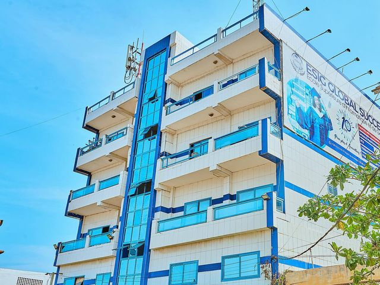
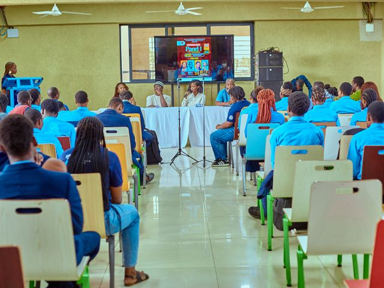
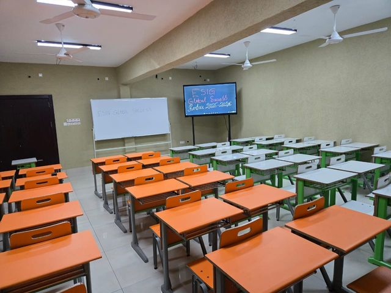
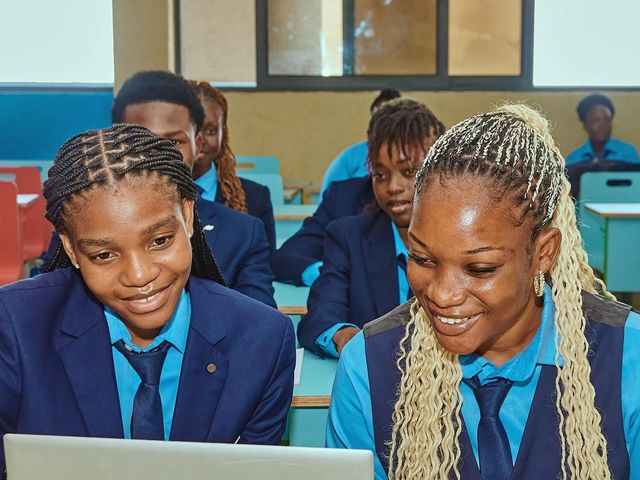
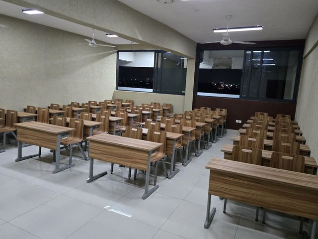
Une école présente au-delà des frontières
L'ESIG ne se contente pas de former : elle tisse activement des liens avec les institutions académiques européennes.
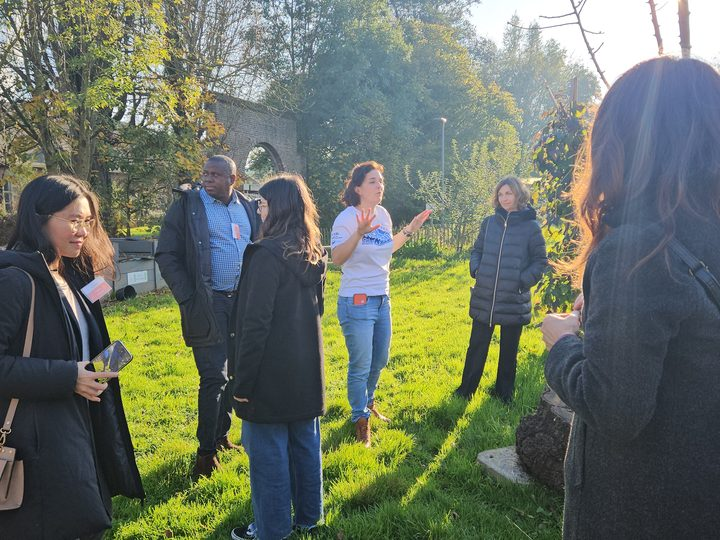
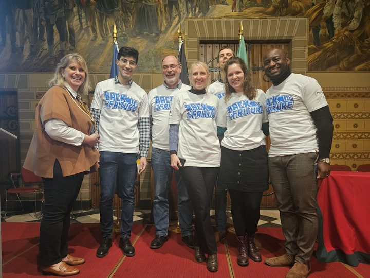
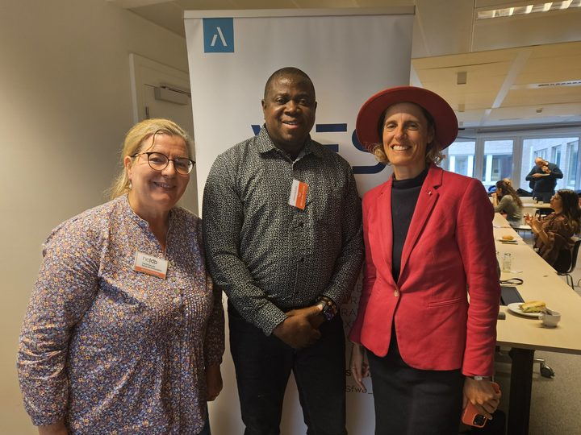
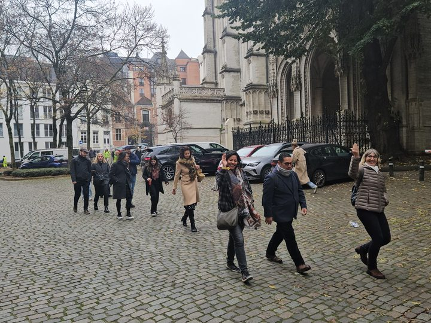
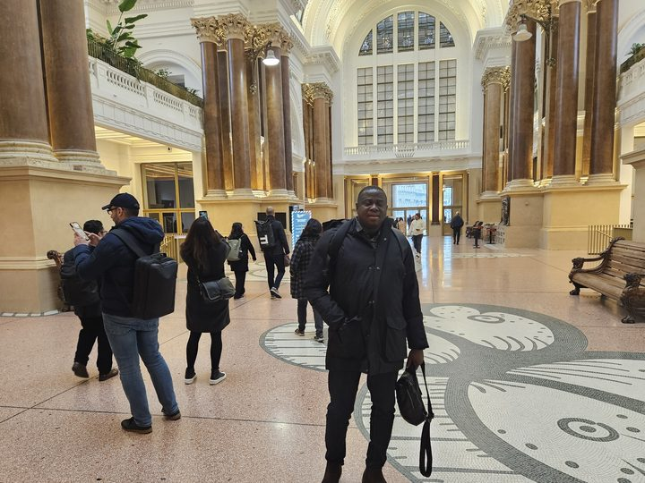
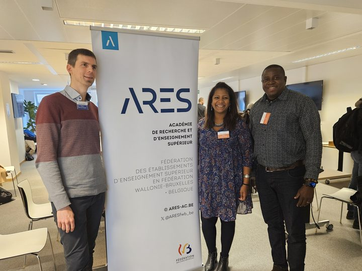
Une présence active à l'international. L'ESIG Global Success a participé à la Semaine Internationale du Personnel organisée par la Haute École Lucia de Brouckère (Belgique), représentée par son Directeur Général, M. Robert K. SEDJRO. L'occasion de renforcer nos partenariats avec la Fédération Wallonie-Bruxelles (ARES) et les acteurs européens de l'enseignement supérieur.
Vos études se poursuivent à l'international
Grâce à nos accords avec des universités françaises, canadiennes et belges, nos diplômés poursuivent leur parcours à l'étranger.
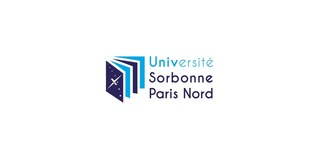
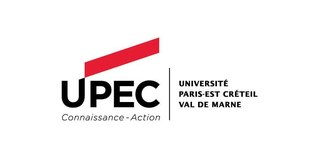
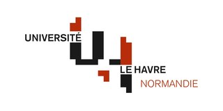
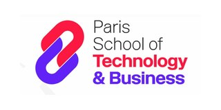
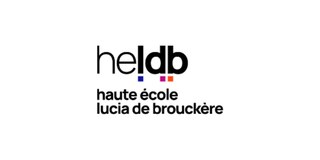
Ils ont commencé à l'ESIG, ils réussissent aujourd'hui
Des parcours réels et authentiques — de Lomé à Paris, du salariat à l'entrepreneuriat.
De Lomé aux ateliers d'ALSTOM à Paris : mon parcours a commencé à l'ESIG. Grâce au partenariat avec l'Université Paris-Est Créteil, j'ai poursuivi en Génie Industriel et Maintenance avec une bourse. L'ESIG m'a ouvert les portes d'une carrière internationale.
Après ma Licence à l'ESIG, j'ai intégré une grande entreprise internationale du commerce alimentaire comme assistante commerciale. Aujourd'hui, je poursuis mon Master 2 tout en travaillant. L'ESIG m'a donné les compétences et la confiance pour réussir.
Après ma Licence en Gestion Logistique et Transport, j'ai créé ma boutique de prêt-à-porter. Je poursuis mon Master 2 en Commerce International et Supply Chain pour développer mon activité. À l'ESIG, j'ai appris qu'un diplôme peut aussi devenir une entreprise.
Ancien Délégué Général de l'ESIG, j'exerce aujourd'hui comme Chef Service Logistique dans une grande société de transport de marchandises. Chaque jour, je mets en œuvre les compétences acquises à l'ESIG. L'ESIG forme des professionnels capables de transformer les connaissances en résultats.
Après mon baccalauréat à Niamey et une année en Tunisie, j'ai rejoint l'ESIG. Je suis pleinement épanouie dans un environnement multiculturel, avec des enseignants disponibles et une formation orientée vers la pratique. Choisir l'ESIG a été l'une des meilleures décisions de mon parcours.
Prêt à rejoindre ESIG Global Success ?
La prochaine rentrée commence bientôt. Faites votre pré-inscription en quelques minutes.